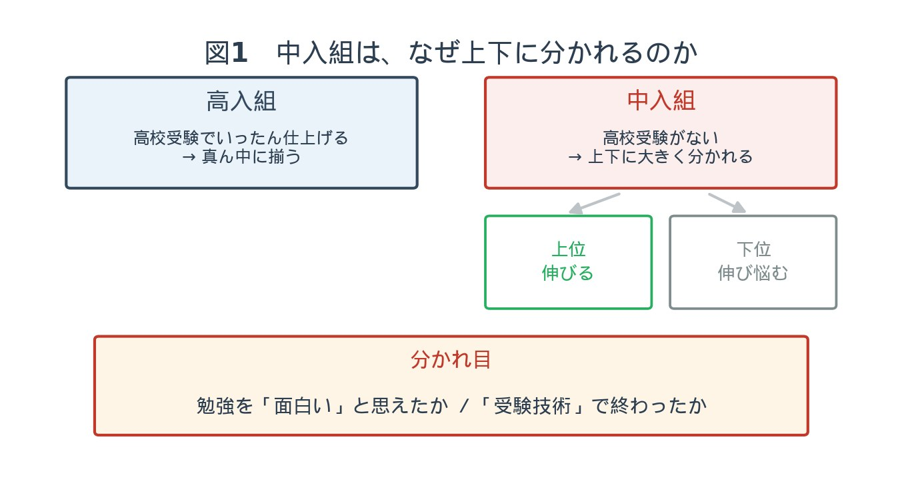
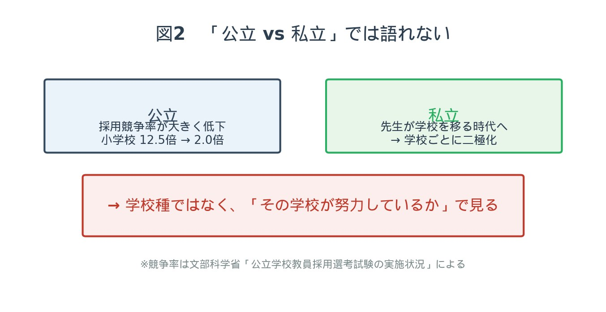
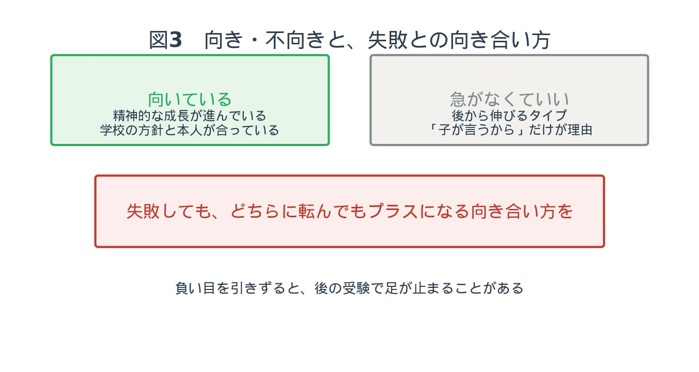

第一部 ── 入ってから、伸びているのか
管野前回は、中学受験をする生徒が私たちの印象よりは少ないこと、そして今の入試は、ただテキストの問題をたくさん解けばいいというものではなくなっていることを伺いました。保護者の方からは「中学受験させるには、親も知識・教養がないとダメなのか」と、少しビビったような感想もいただいています。今日は私の方から、デメリット的な話もさせてもらいたいと思います。
管野私はかつて、塾講師になる前に私立学校で教員をしておりました。もう40年近く前、都内のある男子校です。中学から上がってきた生徒と、高校から入ってきた生徒。入試のときに別々に受けているんですよ。私は英語だったので採点をしたんですけれども、中入組の点数は50点以下だった。ほとんど40点、ひどい生徒だと20点ぐらい。高入生はだいたい60点前後なんです。「こんなに違うのか」と驚きました。
管野中入組は、トップにいる数人はものすごくできる。あとは学力がない。高校入試がないので、中3のときに受験勉強をまったくしないわけです。ずっと遊んでいる。so 〜 that 〜 や、can't、too 〜 to 〜 の書き換えといった、高校受験をした人なら誰でも分かる構文を、まったく知らないんですよ。
管野最近ですと、中入組の生徒が学校の中間・期末についていくために ── その人たち専用の塾ができているんですね。私はすごくいびつな感じがしていて。遊びを覚えて、のんびりしすぎて、肝心なときに学力がついていない。高校に入ってから伸びていないんじゃないか、という私の疑問に対しては、どうでしょう。
池村構造的に、どの学校でも中入組が上下に分かれてしまうのは、もうしょうがないと思うんですよ。どんな進学校と言われるところでも。そもそも高入組は、いったん高校受験のために仕上げてくるから、真ん中には行くじゃないですか。あとは、勉強に興味がなくなって落ちこぼれてしまうかどうかは、結構その人によるのかなと。中学受験をやってきた子でも、「勉強とは受験を突破するためだけのものだ」とテクニカルに捉えている子は、やっぱり、ちょっと弊害が出てしまうのかな、と。
管野勉強の面白さを知らないまま、受験技術だけに走って終わってしまうと、「勉強」というと小学校のときに苦しんでやった詰め込みしか想像できない。だから高校生・大学生になって、本来なら勉強に興味が出てくるはずの時期に、まったく関心を持たない。そういう人も、現実にたくさん見ました。

§1 ── 総合型選抜が、私立中を変えた
宮崎痛いところではあるんですけれども、最近は中学の中でやることがだいぶ変わってきているんですね。大学入試も変わったじゃないですか。総合型選抜1が始まって、自分の得意なことや好きなものを生かして大学受験ができる。私立中もそれを見据えた指導をやっているので、いわゆる「英単語をちゃんと覚えろ」という勉強はやらない生徒でも、探究活動や自分の好きな研究に取り組める環境がある。その部分では、昔の私立中よりも意欲的に取り組んでいる生徒の割合は増えているんじゃないかな、と。
§2 ── 親は「一緒に疑問に思う」でいい
管野前回の「入試問題が、詰め込みだけでは解けないものになっている」という話ですが ── 逆に言うと、日頃から知的好奇心に満ちた会話をお子さんとしている家庭の子じゃないと受からないとなると、新たな階層が生まれるというか。新しいエリートが誕生するのかな、という気もするんですけれども。
池村「親が教養的じゃないといけない」と、そこまでハードルを上げなくてもいいと思うんですよ。ただ単に、たとえば一緒にニュースを見て「これってどういうことなのかね」と一緒に疑問に思ったりとか。そういうきっかけを与えるような。「本を読みなさい」と押し付けるんじゃなくて、自分が読書を楽しんでいる姿を見せるとか。
管野それがね、読書を楽しんでいる親が少ないんですよ。保護者面談のときに「うちの子、本を読まないんです」とおっしゃるから、「お母さんは読んでますか」と聞くと、「いや、私もあんまり読まない」と。それは読まないでしょう、と。
管野最近はネットやSNSで、この動画も含めて短いものばかり。インスタントで済ませてしまう。── 前回のインドカレーの問題にしろ、長い文章が出る。文章の読み取りが大事だという話でしたよね。そうすると逆に、本をたくさん読んでいる人が強い。
池村アンチテーゼですよね。
§3 ── 「受かれば楽」という誤解
管野中入組のお母さん方が言っていたのは、「高校受験をしないで済むから楽ができると思った」と。でも、入ってみたら全然楽じゃなかった、と。高二、高三になると学校の勉強についていくのが結構大変になってしまう。「中学受験すると後が楽だから」という人がすごく多いので ── 全然楽じゃない、ということはここではっきり言ってください。
池村しかも、楽をしたところでいいことないですよね。
第二部 ── 「私立は手厚い」は、本当か
管野前回の「私立の方が面倒見がいいんじゃないか」という話。私はそれは誤解だと思っていて。私立は単独で先生を募集しているんですよね。公立はちゃんと試験を受けてきている。しかも私立はいったん就職すると先生が変わらない。だから名門校ほど年配の先生が多い。── 先生のレベルは公立の方が高いんじゃないかと私は思うんですけれども、どうでしょう。
宮崎ちょっと反論してもいいですか。公立の教員採用試験の競争率を調べてみたんですけれども ── 全国の数値で、2000年は小学校が12.5倍、中学校が17.9倍。2025年には、小学校が2.0倍、中学校が3.6倍です2。圧倒的に、公立の先生になりやすい時代になっている。「昔ほどレベルが高いのか」という部分で言うと、競争率だけを見てしまうと、もしかしたら昔よりも平均値は下がっているのかもしれない、という予測ですね。
宮崎一方で、「私立は先生が変わらない」とおっしゃったんですけれども、今は全然違っていて。先生たちもキャリアアップのために転職をする時代になって、学校を変わるんです。優秀な先生、やる気のある先生は、自分のやりたいことができる環境を目指して移っていく。そういう意味では、私立はだいぶ二極化しているというか。いい先生が集まっている学校と、そうじゃない学校と。
管野私立の場合、それがあるんですよ。その情報を知らないまま、ただ偏差値の順番に受けて、上が受からなかったから「せっかく受かったんだから」と進んでしまうと、うまくいかないこともありますね。── もう一点、私の考えですが3、「私立が名門であり、優れている」というのは欧米の話なんですよね。歴史的に、欧米では名門校は私立しかない。日本の場合は明治以降、国が学校を作ってきたので、国公立が優秀だった。私立は受け皿であった。だから、私立が良くなるとしたら、これからだと思うんですね。今、優秀な子どもたちが私立中学に流れていくのであれば、これから成果が出てくるのかな、と。
池村先生の優秀さで言うと、私立って大変だなと思ったのは ── うちの塾にも、高校の先生からさらなるやりがいを求めて移ってきた、すごく優秀な数学の先生がいるんですよ。優秀な先生が流動的な分、学校自体が努力していかなければいけない。最近、私たちが接している私立の学校さんは、めちゃめちゃ努力されているなと、すごく思いますね。むしろ昔から、勝手に優秀な生徒が来るような学校の方が、あぐらをかいてしまっている。
管野それ、私も塾講師で本当に感じましたね。偏差値の高い学校は、生徒が優秀だから勝手に勉強する。もともと優秀な生徒が予備校に行っていい大学に受かっているだけなのに、「その学校の教育方針がいいから」偏差値が高いわけではない、という。そこをちゃんと分かっていないと、見誤りますよね。

第三部 ── 向き・不向きと、失敗との向き合い方
管野では、親御さんはどういうところに気をつければいいですか。自分の子は中学受験に向いているのか。向き不向きは、どこで見分ければいいんでしょう。
宮崎子どもで言うと、精神的な成長の度合い。ある程度、精神年齢が高くなってきた方が、受験はうまくいく割合が高いかなという気がします。あまりにも精神年齢が低いのに無理やり中学受験をさせると、たいていうまくいかない。
管野早熟な子もいれば、後から伸びてくる子もいる。後から伸びてくるタイプには、無理やり中学受験をさせる必要はない、ということですね。
池村まったく同じ意見なんですけれども、やっぱり親が、ある程度は子どもの意見を尊重しつつも、見極めなければいけないなと思うんですよね。前回も「子どもがやりたいと言っているケースをよく見る」と言いましたけれども、その「やりたい」プラス、「この子だったら、この学校の雰囲気や教育内容がめちゃめちゃ合っているな」と見極めてあげる。
管野「子どもが受けたいと言ったから受けさせるんです」という主体性のないことではダメだ、ということですね。── 中学受験に失敗した、あるいは行きたい学校ではないところに行ってしまった子が、中三ぐらいで「他の高校を受けたいから」と塾に入ってくることがあったんですね。ところが、そういう子は入試間近になると来なくなるんですよ。結構できるのに。12月になると生徒たちがみんな受験モードになる。その雰囲気についていけない、怖くなるみたいなんです。失敗経験があるので。
管野中学受験に失敗して、ふてくされて、まったく勉強をやろうとしない子もいました。頭はすごくいいのに、失敗したという負い目をずっと引きずっている。そういうこともあるということを、親御さんには分かっていただきたい。その上でよく判断していただきたいなと思います。
池村受験をして失敗しても、絶対にプラスになるような向き合い方を、塾と連携して必ず模索して、どちらに転んでもプラスになったよね、というふうにしていかないと絶対にダメだと思うんですよね。逆に、たとえ第一志望に落ちて公立中に進学した子でも、高校受験のときにいい終わり方をした子は、もともと志望していた中学のレベルよりもっと上の志望校にちゃんと合格する子もいますから。向き合い方が大事だと思いますね。

管野意地悪な言い方をするようですが、中学受験をする子は、平均してできる子が多いと思うんですね。「この子は普通に公立中に行って、普通に高校を受けても絶対受かるな」と思う子が、わざわざ高い倍率で受験する。授業料の無償化と言っていますけれど、修学旅行などで結構お金がかかるんですよ。── ということで、様変わりする中学受験について、メリット・デメリットの両方があるということを、親御さんは考えて、その上で慎重に決めていただきたいなと思います。
ご家庭で考えてみてください
この鼎談を「読んで終わり」にしないために、判断の前に置いておきたい三つを書いておきます。
1. 「受かったら楽になる」を、動機から外す。
入ってからのほうが大変なこともある、というのが現場から見た実情です。楽になるために受ける、という前提を外したとき、それでも受ける理由が残るかどうか。
2. 学校種ではなく、その学校を見る。
公立か私立かではなく、その学校がいま何に力を入れているか。説明会で、偏差値ではないところを聞いてみてください。
3. 「落ちたとき、どうするか」を先に話しておく。
失敗が負い目として残るか、次につながるかは、向き合い方で変わります。受ける前に、家庭と塾で、そこを一度そろえておくことです。